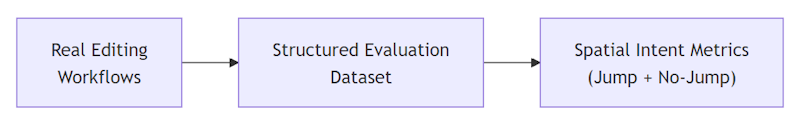

构建长距离下一编辑建议
2026年2月26日，作者 Vikram Duvvur、Gaurav Mittal、Benjamin Simmonds
去年二月，我们在 GitHub Copilot 中发布了下一编辑建议（NES）。NES 扩展了幽灵文本的功能，不仅可以在光标处插入代码，还能建议附近的编辑，预测你接下来可能要修改的内容。这是向前迈出的重要一步，但它仅在光标周围的小窗口内有效。在实际编辑工作流程中，你需要做的下一个修改往往在几个屏幕之外。
这正是我们着手解决的问题：长距离下一编辑建议——将 NES 扩展到可以预测并建议文件中任意位置的编辑，而不仅仅是当前光标位置附近。

从附近编辑到文件中任意位置
想象一次典型的重构过程。你重命名了一个函数，文件中所有对该函数的调用也需要更新。或者你更改了参数类型，使得下方200行的验证逻辑现在变得不正确。这些正是你期望 NES 能帮到你的时刻，但不幸的是，下一个有意义的编辑远远超出了它的有效范围。
这带来了一个困难的建模问题。搜索空间从附近的几行急剧扩展到文件中的每一行。而预测错误的代价并非均匀分布：正确的跳转可以为你节省实际的工作量，但不必要的跳转会打断你的工作流，降低你对下一个建议的信任度。系统不仅需要学习跳转到哪里，还需要学习什么时候不该跳转。
我们没有修改现有的编辑生成模型，而是采用了多模型方法。我们训练了一个专用的位置模型，其唯一职责是预测下一个编辑应该发生在_哪里_。一旦选定了有效的位置，再由原始的 NES 模型生成编辑建议。
这种分离有两个好处。首先，每个模型可以专注于一项任务：一个模型学习空间意图（_跳转到哪里_），另一个模型在局部窗口内生成高质量的编辑。此外，这使我们能够独立迭代位置预测，而不会干扰核心 NES 模型的持续改进。
通过评估框架衡量成功
在训练位置模型之前，我们需要一种方法来衡量它在真实编辑场景中是否真的有效。
我们设计了一个结构化的三步评估流程：
- 识别常见的多编辑工作流程
- 构建代表性的光标跳转示例
- 同时衡量跳转和不跳转的准确率

我们首先分析了开发者在真实场景中如何串联编辑操作——重命名、签名更改、文档更新——而不是将每次编辑视为孤立事件。共同点是：一次编辑会在文件中的多个非相邻位置产生连锁反应。
基于这些工作流程，我们构建了一个评估数据集，每个样本包含应该跳转到的下一行的真实标注、最近的编辑历史和光标上下文。
关键的是，我们同时衡量了跳转和不跳转的准确率。虽然许多示例需要预测新位置，但相当一部分子集需要保持当前行不变。一个频繁跳转的模型可能与一个错过重要转换的模型同样具有破坏性。想象一下，每次你正在输入变量名的时候都会收到跳转建议。
通过将评估建立在真实工作流程上，并同时衡量跳转和不跳转情况，我们确保了离线指标能够反映开发者实际的编辑方式，而非人工构造的场景。
构建训练数据集
在评估体系就位后，我们转向了训练数据。虽然评估数据集小到可以手工构建，但训练需要更大规模的数据。我们从为训练核心 NES 模型而精心整理的数据集开始，该数据集包含了开发者在文件中移动和编辑的轨迹。
通过回放这些轨迹，我们将每次光标移动转换为训练样本。在经过过滤（例如确保跳转位置出现在提示中）之后，我们就得到了训练数据集。
使用监督微调进行训练
为了训练位置模型，我们使用了监督微调（SFT）并结合有针对性的超参数搜索。我们最好的结果来自于围绕现有 NES 模型超参数进行的结构化网格搜索。通过将搜索空间限制在已知在相关设置中表现良好的值上，我们能够高效地探索参数组合并找到高性能的配置。
在确定此方法之前，我们还尝试了贝叶斯优化，这是一种用于优化昂贵黑盒函数的技术。在我们的场景中，每次评估都需要从头训练一个模型，使得实验的计算成本很高。虽然理论上有吸引力，但这种方法相比更聚焦的网格搜索并没有带来改进。
最终，结构化网格搜索产出了我们表现最好的监督模型，并为后续迭代提供了稳定的基础。
为远距离编辑设计 UX
如果用户从未注意到或不信任它产生的建议，再好的模型也不够。在标准 NES 中，建议出现在光标附近和你的即时视野内，使其自然可被发现。而对于长距离 NES，最相关的编辑可能不在你的附近。因此，UX 需要解决一个更难的问题：在不打断你工作流的情况下展示远距离编辑。

这归结为平衡三个关注点：保持建议简洁、使其可读，以及尽量减少对被遮挡代码的影响。
这不仅仅是一个可发现性问题，也是一个信任问题。当系统建议将你的光标移动到别处时，你需要快速判断该跳转是否相关且值得关注。UI 必须传达足够的上下文来评估建议，而不需要完全的上下文切换。
我们没有渲染大型的内联差异或强制注意力转移，而是设计了一个紧凑的小部件，它出现在光标附近，并优先利用空白空间。该小部件会适应周围的编辑器布局，自然地缩小或扩展以契合空白区域，例如行尾或代码块之间。
由于完整的编辑可能很远且可能很大，该小部件不会尝试渲染整个建议。相反，它提供一个轻量级的预览——来自受影响行之一的摘录，并以差异式高亮渲染。这为你提供了足够的上下文来判断相关性并决定是否采取行动。
如果预览看起来有用，你可以选择跳转到建议的位置，在那里查看或应用完整编辑。如果没有，你可以继续不受打扰地编辑。
验证：从内部试用到 A/B 测试
在发布新功能之前，我们始终会在内部进行试用（dogfooding），长距离 NES 也不例外。早期反馈揭示了一个明显的模式：模型过于热衷于跳转。即使其预测方向正确，频繁的建议也会让人分心。根本原因是数据集不平衡："不跳转"的示例远少于跳转示例。模型学会了自信地跳转，但没有学会什么时候应该保持不动。
我们通过扩展"正确操作是保持当前行不动"的样本来重新平衡数据集，例如部分输入的标识符，此时跳转没有意义。重新训练后，跳转和不跳转的准确率都有所提高，建议也明显更加有意图。
为了在规模上验证，我们运行了 A/B 测试，将长距离 NES 与标准 NES 进行对比。结果令人鼓舞：通过 NES 编写的代码量增加了 23%，同时其他参与度指标也有所改善。但实验也暴露了一个权衡问题。远距离建议被拒绝的频率高于标准 NES。其中部分原因是预期的，考虑到这是一种新的交互模式，但这表明模型在建议跳转的时机上仍需更加精挑细选。
这不仅仅是纯粹的建模问题或纯粹的 UX 问题，而是两者兼有。改进长距离 NES 需要收紧模型的跳转预测，同时确保界面能让用户轻松评估和接受相关建议。
强化学习：学习何时不跳转
验证结果指向了一个明确的结论：监督模型需要更多的克制力。
为了解决这个问题，我们引入了一个强化学习阶段，使用基于验证奖励的强化学习（RLVR）。我们不再仅依赖监督标签，而是添加了一个评分信号，基于模型预测的跳转位置与实际光标移动的匹配程度。与实际编辑行为紧密一致的预测会得到更强的奖励，而不必要或时机不当的跳转则会受到惩罚。
这使得模型可以直接针对真实编辑条件进行优化，而无需新的手动标注或 UX 埋点。
结果是主动性和克制力之间取得了更好的平衡。更新后的模型改善了离线指标，并将这些提升转化为在线性能，在提高 NES 代码编写量的同时降低了拒绝率。有了这些信号在手，我们在次月开始发布改进版本。
下一步是什么？
展望未来，我们计划将这项工作扩展到跨文件建议，使模型能够超越当前文件进行推理。我们还在探索一个统一的模型，同时预测下一次编辑的位置和内容，这可以提升建议的整体相关性。
立即体验
长距离下一编辑建议现已面向拥有 GitHub Copilot 订阅的用户在 VS Code 中可用——只需确保在 VS Code 中启用了下一编辑建议和扩展 NES 范围 setting(github.copilot.nextEditSuggestions.extendedRange)。下次进行重构工作时试试看——重命名变量、更新函数签名，或进行会在文件中产生连锁反应的修改。我们期待听到你的反馈！
编程愉快！💙
致谢
衷心感谢我们的开发者社区持续提供反馈，推动我们为 VS Code 和 GitHub Copilot 打造最佳体验。同时非常感谢 GitHub 和 Microsoft 的研究人员、工程师、产品经理和设计师们，他们精心整理了训练数据，构建了训练流水线、评估套件和服务栈，以及感谢 VS Code 和 GitHub Copilot 团队确保模型的顺利发布。